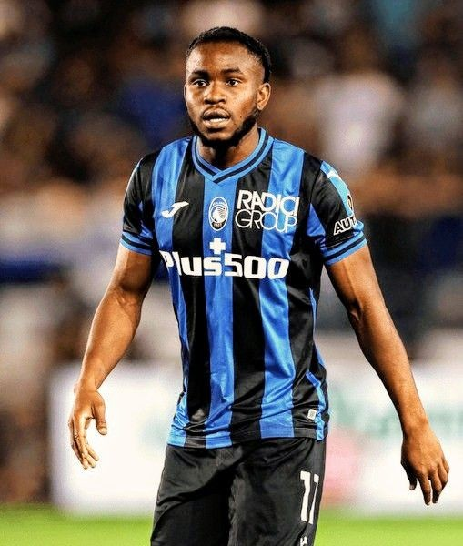
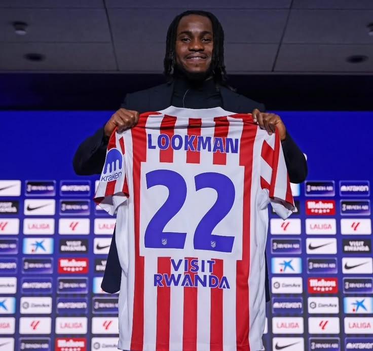

In one of the most talked-about transfers of the window, Nigerian international Ademola Lookman has officially completed a high-profile move to Atlético Madrid, marking a significant step forward in his rapidly evolving career. The Spanish giants confirmed the deal earlier today, unveiling the dynamic forward to fans at the Civitas Metropolitano amid widespread excitement and anticipation.

Lookman arrives in Spain following an impressive spell in European football, where his pace, creativity, and clinical finishing consistently set him apart. Known for his ability to operate on either wing or through the middle, the 26-year-old forward is expected to bring directness and unpredictability to Atlético’s attacking setup.
Speaking during his unveiling, Lookman expressed his enthusiasm for the challenge ahead.
“Joining a club with the history and ambition of Atlético Madrid is a dream come true. I am ready to give everything for the badge and for the fans.”
The move signals Atlético’s intent to reinforce their attacking depth as they prepare for another demanding La Liga and European campaign.
Under the leadership of Diego Simeone, Atlético Madrid has built a reputation for tactical discipline, defensive resilience, and explosive counter-attacking football. Lookman’s speed and work rate make him a natural fit for Simeone’s philosophy.
Football analysts believe Lookman could thrive in Atlético’s structured yet aggressive system. His ability to press defenders, recover possession, and transition quickly into attack aligns closely with Simeone’s demands for intensity and commitment.
Simeone himself praised the Nigerian forward during the announcement:
“He is a player with courage, speed, and quality in one-on-one situations. He brings hunger and ambition, which are values we cherish at this club.”